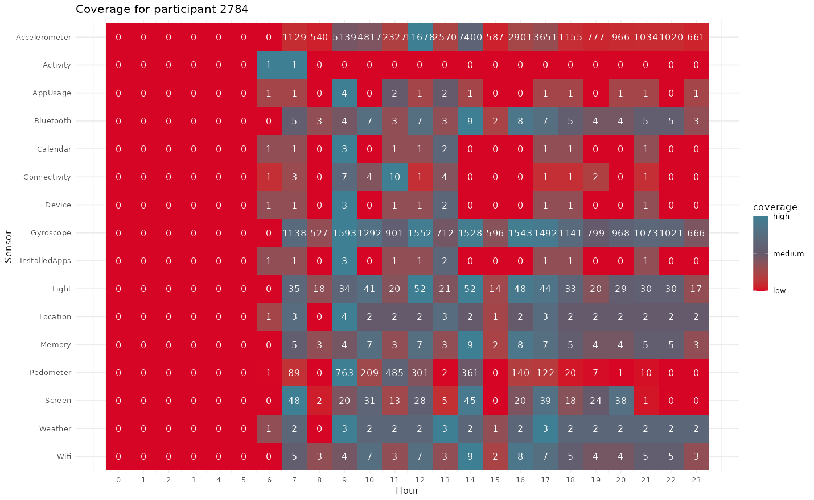

First, make sure we load some useful libraries (and of course
mpathsenser itself).
library(tidyr)
library(dplyr)
#>
#> Attaching package: 'dplyr'
#> The following objects are masked from 'package:stats':
#>
#> filter, lag
#> The following objects are masked from 'package:base':
#>
#> intersect, setdiff, setequal, union
library(ggplot2)
library(mpathsenser)Importing files
The data for this vignette is contained in the extdata
folder. However, on some system this folder may be set to read-only and
it is generally good practice not to modify package folders (to prevent
changing or breaking the package). To this end, we first copy the data
to a temporary directory (as defined by the environment variable , , or
), a directory that is freshly created each time at R’s start up and
cleaned up when the session ends.
# Get the temp folder
tempdir <- tempdir()
tempdir <- file.path(tempdir, "vignette")
dir.create(tempdir)
# Get a handle to the data files
path <- system.file("extdata", "example", package = "mpathsenser")
# Get a list of all the files that are to be copied
copy_list <- list.files(path, "carp-data", full.names = TRUE)
# Copy all data
file.copy(
from = copy_list,
to = tempdir,
overwrite = TRUE,
copy.mode = FALSE
)The extdata folder contains several .zip
files as well as some JSON files. It is likely that the
data for your study will look the same only much more. Note that all of
these data files came directly from m-Path Sense (i.e. there was no
pre-processing yet).
The data from m-Path Sense originates in the following way: The
application continuously collects all kinds of data in the background
(e.g. accelerometer data). Once collected, the data goes through several
stages where, for example, the data is pre-processed (as already happens
with data from the light sensor) or anonymised upon
request. Finally, data is written to a JSON file which is
really just a text file but with a specific format. When some new data
comes in (whether it be from the same sensor or not), the next line is
written in the JSON file and so on, until the file has
reached a certain size (5MB by default). The JSON file is
then zipped to reduce its size and subsequently transferred to a server.
Once transferred, the data is deleted from the participant’s phone to
both save on space as well as prevent data leakage.
Thus, a first step to take is to unzip these files to extract its
JSON contents. If you feel more comfortable unzipping using
your favourite zip program you can do so, just make sure all files end
up in the same directory (including the non-zipped JSON files).
unzip_data(path = tempdir)
#> Unzipped 37 files.In m-Path Sense, data is written to JSON files as it comes in. In the
JSON file format, every file starts with [ and ends with
]. If the app is killed, JSON files are not properly closed
and hence cannot be read by JSON parsers. So, we must first test if all
files are in a valid JSON format and fix those that are not.
You may first run fix_jsons() to fix all files in the
directory that need fixing, or you can first run
test_jsons() to get an estimate of how many file need
fixing. Running fix_jsons() also runs
test_jsons() implicitly to only fix files that really need
fixing.
# Note that test_jsons returns the full path names
to_fix <- test_jsons(tempdir)
#> Warning: There were issues in some files
print(to_fix)
#> [1] "/tmp/RtmptlqU5s/vignette/1_example_carp-data-2022-06-14-09-18-41-055229Z.json"
#> [2] "/tmp/RtmptlqU5s/vignette/1_example_carp-data-2022-06-14-09-38-53-504884Z.json"
#> [3] "/tmp/RtmptlqU5s/vignette/1_example_carp-data-2022-06-14-09-55-14-202021Z.json"
#> [4] "/tmp/RtmptlqU5s/vignette/1_example_carp-data-2022-06-14-11-48-39-822128Z.json"
#> [5] "/tmp/RtmptlqU5s/vignette/1_example_carp-data-2022-06-14-12-46-41-739139Z.json"
#> [6] "/tmp/RtmptlqU5s/vignette/1_example_carp-data-2022-06-14-12-51-10-826674Z.json"
#> [7] "/tmp/RtmptlqU5s/vignette/1_example_carp-data-2022-06-14-13-24-42-818906Z.json"
#> [8] "/tmp/RtmptlqU5s/vignette/1_example_carp-data-2022-06-14-17-47-29-568210Z.json"
#> [9] "/tmp/RtmptlqU5s/vignette/1_example_carp-data-2022-06-14-20-35-31-622759Z.json"
#> [10] "/tmp/RtmptlqU5s/vignette/1_example_carp-data-2022-06-14-23-47-14-992568Z.json"
#> [11] "/tmp/RtmptlqU5s/vignette/1_example_carp-data-2022-06-15-06-59-54-808885Z.json"
#> [12] "/tmp/RtmptlqU5s/vignette/1_example_carp-data-2022-06-15-08-03-14-431352Z.json"
fix_jsons(path = NULL, to_fix)
#> Fixed 12 filesNext, we can create an mpathsenser database using the
create_db() function. This function takes as a first
argument a pathname where the database will be created and as a second
argument a db_name to name the database file. You may also
leave path set to NULL and specify a full path
name (including file name) in the db_name argument. Always
remember to save the output to a variable so you can use it later and to
avoid having an open handle but unused handle on the database
connection.
# Create a new database
db <- create_db(tempdir, "getstarted.db")Finally, we can import the data into the newly created database using
the import() function. This function takes as a first
argument the path to the directory where the data is located and as a
second argument the database handle. You may also specify a
batch_size to control how many files are imported at once.
Files are processed sequentially (though parallellism is supported via
the future package) but files are written in batch to the
database for the sake of efficiency. A greater batch size thus denotes
larger batches of files being written to the database at once (and is
more efficient), but risk failing the larger batch a single file fails
to be processed.
# Import the data
import(
path = tempdir,
db = db,
sensors = NULL, # All sensors
batch_size = 12,
recursive = TRUE
)
#> Importing data... ■ 0/4 batches [ 0%] |
#> Importing data... ■■■■■■■■■ 1/4 batches [ 25%] | ETA: 12s
#> Importing data... ■■■■■■■■■■■■■■■■ 2/4 batches [ 50%] | ETA: 14s
#> Importing data... ■■■■■■■■■■■■■■■■■■■■■■■ 3/4 batches [ 75%] | ETA: 8s
#> Importing data... ■■■■■■■■■■■■■■■■■■■■■■■■■■■■■■■ 4/4 batches [100%] | ETA: 0s
#> All files were successfully written to the database.Creating a coverage chart
To get a better overview of the data, we may create a coverage chart that shows the average number of collected samples per hour for each sensor for a single participant. An important distinction must be made between a relative and absolute coverage chart. The relative coverage chart shows the average number of samples per hour for each sensor as a percentage of the expected number of samples per hour for that sensor. The absolute coverage chart shows the average number of samples per hour for each sensor. The relative coverage chart is useful to see how well the data is being collected for each sensor, while the absolute coverage chart is useful to see how well the data is being collected in general.
sensors <- c(
"Accelerometer", "Activity", "AppUsage", "Bluetooth", "Calendar",
"Connectivity", "Device", "Gyroscope", "InstalledApps", "Light",
"Location", "Memory", "Pedometer", "Screen", "Weather", "Wifi"
)
cov <- coverage(
db = db,
participant_id = "2784",
sensor = sensors,
relative = FALSE
)
print(cov)
#> # A tibble: 384 × 3
#> hour measure coverage
#> <dbl> <fct> <dbl>
#> 1 0 Accelerometer 0
#> 2 1 Accelerometer 0
#> 3 2 Accelerometer 0
#> 4 3 Accelerometer 0
#> 5 4 Accelerometer 0
#> 6 5 Accelerometer 0
#> 7 6 Accelerometer 0
#> 8 7 Accelerometer 1129
#> 9 8 Accelerometer 540
#> 10 9 Accelerometer 5139
#> # ℹ 374 more rowsAdditionally, we can print the coverage data using the
plot() function.
plot(cov)
Closing the database
Finally, recall that once you’re done working with a database to also close it.
close_db(db)